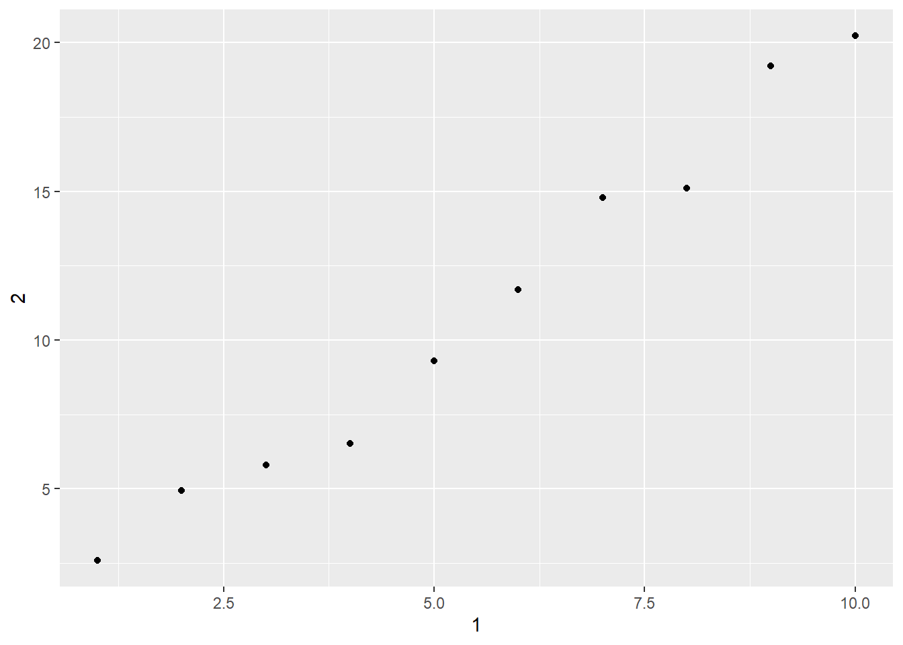

Chapter 10 Tibbles
10.1 Introduction
We’ll be learning about tibbles here. Tibbles are a fancier and more updated version of data.frames. We need to have the library tidyverse loaded for this section.
10.2 Creating tibbles
You can coerce a data frame into a tibble using as_tibble().
## # A tibble: 150 x 5
## Sepal.Length Sepal.Width Petal.Length Petal.Width Species
## <dbl> <dbl> <dbl> <dbl> <fct>
## 1 5.1 3.5 1.4 0.2 setosa
## 2 4.9 3 1.4 0.2 setosa
## 3 4.7 3.2 1.3 0.2 setosa
## 4 4.6 3.1 1.5 0.2 setosa
## 5 5 3.6 1.4 0.2 setosa
## 6 5.4 3.9 1.7 0.4 setosa
## 7 4.6 3.4 1.4 0.3 setosa
## 8 5 3.4 1.5 0.2 setosa
## 9 4.4 2.9 1.4 0.2 setosa
## 10 4.9 3.1 1.5 0.1 setosa
## # ... with 140 more rowsCreate new tibble from individual vectors using tibble().
## # A tibble: 5 x 3
## x y z
## <int> <dbl> <dbl>
## 1 1 1 2
## 2 2 1 5
## 3 3 1 10
## 4 4 1 17
## 5 5 1 26If you’re already familiary with data.frame(), note that tibble() does much less:
- it never changes the type of inputs (never converts strings to factors!)
- never changes the names of variables
- never create row names
It is possible for a tibble to have column names that are not valid R variable names. For example, they might not start with a letter, or they might contain unusual characters like a space. To refer to these variables, you need to surround them with backticks, ```:
## # A tibble: 1 x 3
## `:)` ` ` `2000`
## <chr> <chr> <chr>
## 1 smile space numberYou’ll also need the backticks when working with these variables in other packages like ggplot2, dplyr, and tidyr.
Another way to create a tibble is with tribble(), short for transposed tibble. tribble() is customised for data entry in code: column headings are defined by formulas (ie they start with ~), and entries are separated by commas. This makes it possible to lay out small amounts of data in easy to read form.
## # A tibble: 2 x 3
## x y z
## <chr> <dbl> <dbl>
## 1 a 2 3.6
## 2 b 1 8.510.3 Tibbles vs. data.frame
There are two main differences in the usage of a tibble vs. a classic data.frame: printing and subsetting.
10.3.1 Printing
Tibbles have a refined print method that shows only the first 10 rows, and all the columns that fit on the screen. This makes it much easier to work with large data. In ddition to its name, each column reports its type, a nice feature borrowed from str():
tibble(
a = lubridate::now() + runif(1e3) * 86400,
b = lubridate::today() + runif(1e3) * 30,
c = 1:1e3,
d = runif(1e3),
e = sample(letters, 1e3, replace = TRUE)
)## # A tibble: 1,000 x 5
## a b c d e
## <dttm> <date> <int> <dbl> <chr>
## 1 2021-08-12 02:57:13 2021-08-15 1 0.0852 f
## 2 2021-08-11 18:59:09 2021-09-04 2 0.731 o
## 3 2021-08-11 21:50:47 2021-08-18 3 0.267 i
## 4 2021-08-12 13:10:53 2021-09-05 4 0.550 s
## 5 2021-08-11 21:09:59 2021-08-12 5 0.655 u
## 6 2021-08-11 18:48:59 2021-08-21 6 0.695 s
## 7 2021-08-12 13:57:25 2021-08-13 7 0.730 y
## 8 2021-08-12 07:00:17 2021-08-27 8 0.763 q
## 9 2021-08-12 12:28:04 2021-09-02 9 0.839 d
## 10 2021-08-12 01:50:24 2021-09-06 10 0.976 o
## # ... with 990 more rowsTibbles are designed so that you don’t accidentally overwhelm your console when you print large data frames. But sometimes you need more output than the default display. There are a few options that can help.
First you can explicitly print() the data frame and control the number of rows (n) and the width of the display. width = Inf will display all columns:
## # A tibble: 336,776 x 19
## year month day dep_time sched_dep_time dep_delay arr_time sched_arr_time
## <int> <int> <int> <int> <int> <dbl> <int> <int>
## 1 2013 1 1 517 515 2 830 819
## 2 2013 1 1 533 529 4 850 830
## 3 2013 1 1 542 540 2 923 850
## 4 2013 1 1 544 545 -1 1004 1022
## 5 2013 1 1 554 600 -6 812 837
## 6 2013 1 1 554 558 -4 740 728
## 7 2013 1 1 555 600 -5 913 854
## 8 2013 1 1 557 600 -3 709 723
## 9 2013 1 1 557 600 -3 838 846
## 10 2013 1 1 558 600 -2 753 745
## arr_delay carrier flight tailnum origin dest air_time distance hour minute
## <dbl> <chr> <int> <chr> <chr> <chr> <dbl> <dbl> <dbl> <dbl>
## 1 11 UA 1545 N14228 EWR IAH 227 1400 5 15
## 2 20 UA 1714 N24211 LGA IAH 227 1416 5 29
## 3 33 AA 1141 N619AA JFK MIA 160 1089 5 40
## 4 -18 B6 725 N804JB JFK BQN 183 1576 5 45
## 5 -25 DL 461 N668DN LGA ATL 116 762 6 0
## 6 12 UA 1696 N39463 EWR ORD 150 719 5 58
## 7 19 B6 507 N516JB EWR FLL 158 1065 6 0
## 8 -14 EV 5708 N829AS LGA IAD 53 229 6 0
## 9 -8 B6 79 N593JB JFK MCO 140 944 6 0
## 10 8 AA 301 N3ALAA LGA ORD 138 733 6 0
## time_hour
## <dttm>
## 1 2013-01-01 05:00:00
## 2 2013-01-01 05:00:00
## 3 2013-01-01 05:00:00
## 4 2013-01-01 05:00:00
## 5 2013-01-01 06:00:00
## 6 2013-01-01 05:00:00
## 7 2013-01-01 06:00:00
## 8 2013-01-01 06:00:00
## 9 2013-01-01 06:00:00
## 10 2013-01-01 06:00:00
## # ... with 336,766 more rowsYou can also control the default print behavior by setting options:
options(tibble.print_max = n, tibble.print_min = m): if more than n rows, print only m rows. Useoptions(tibble.print_min = Inf) to alays show all rows.- Use
options(tibble.width = Inf)to always print all columns, regardless of the width of the screen.
You can see a complete list of option by looking at the package help with package? tibble.
10.3.2 Subsetting
So far all the tools you’ve learned have worked with complete data frames. If you want to pull out a single variable, you need some new tools, $ and [[. [[ can extract by name or position, $ only extracts by name but is a little less typing.
## [1] 0.3809941 0.5893957 0.1844371 0.3240162 0.7742614## [1] 0.3809941 0.5893957 0.1844371 0.3240162 0.7742614## [1] 0.3809941 0.5893957 0.1844371 0.3240162 0.7742614To use these in a pipe, you’ll need to use the special placeholder .:
## [1] 0.3809941 0.5893957 0.1844371 0.3240162 0.7742614## [1] 0.3809941 0.5893957 0.1844371 0.3240162 0.7742614Compared to a data.frame, tibbles are more strict: they never do partial matching, and they will generate a warning if the column you are trying to access does not exist.
10.4 Interacting with older code
Some older functions don’t work with tibbles. If you encounter one of these functions, use as.data.frame() to turn a tibble back to a data.frame:
## [1] "data.frame"The main reson that some older functions don’t work with tibble is the [ function. We don’t use the [ much in this book because dplyr::filter() and dplyr::select() allow you to solve the same problems with clearer code. With base R data frames, [ sometimes returns a data frame, and sometimes returns a vector. With tibbles, [ always returns another tibble.
10.5 Exercises
- How can you tell if an object is a tibble? (Hint: try printing
mtcars, which is a regular data frame).
Dataframes do not automatically print nicely, whereas tibbles do.
- Compare and contrast the following operations on a
data.frameand equivalent tibble. What is different? Why might the default data frame behaviours cause you frustration?
## Warning: `as.tibble()` was deprecated in tibble 2.0.0.
## Please use `as_tibble()` instead.
## The signature and semantics have changed, see `?as_tibble`.## [1] "a"## Warning: Unknown or uninitialised column: `x`.## NULL## [1] "a"## # A tibble: 1 x 1
## xyz
## <chr>
## 1 a## abc xyz
## 1 1 a## # A tibble: 1 x 2
## abc xyz
## <dbl> <chr>
## 1 1 aThe first one prints the column ‘xyz’ when we only call for ‘x’. This is a partial match that occurs when we’re using the data frame. On the other hand, using the tibble, we get an error that informs us of an uninitialized column. The tibble behavior is more desirable because we might believe we added column ‘x’ when we actually didn’t and we want to be informed of this. Partial matching of the column names without warning is highly undesirable.
Number 2 on the data frame returns a vector of the column that we specified. This could throw off your code if you are expecting a data frame to be returned.
Number 3 returns a data frame from the data frame. The different return types from 2 and 3 can be problematic, especially if this code is repeated in a function with different input data frames. One way you could prevent getting a vector back from #2 is to use drop=FALSE inside of the square bracket.
## num 1## 'data.frame': 1 obs. of 1 variable:
## $ abc: num 1- If you have the name of a variable stored in an object, e.g.
var <- "mpg", how can you extract the reference variables from a tibble?
## [1] 21.0 21.0 22.8 21.4 18.7 18.1 14.3 24.4 22.8 19.2 17.8 16.4 17.3 15.2 10.4
## [16] 10.4 14.7 32.4 30.4 33.9 21.5 15.5 15.2 13.3 19.2 27.3 26.0 30.4 15.8 19.7
## [31] 15.0 21.4- Practice referring to non-syntactic names in the following data frame by:
annoying <- tibble(
`1` = 1:10,
`2` = `1` * 2 + rnorm(length(`1`))
)
# 1. extracting the variable called 1
annoying[[1]]## [1] 1 2 3 4 5 6 7 8 9 10## [1] 1 2 3 4 5 6 7 8 9 10
# 3. Creating a new column called 3 which is 2 divided by 1
annoying <- annoying %>%
mutate(`3` = `2` / `1`)
annoying## # A tibble: 10 x 3
## `1` `2` `3`
## <int> <dbl> <dbl>
## 1 1 2.58 2.58
## 2 2 4.94 2.47
## 3 3 5.80 1.93
## 4 4 6.53 1.63
## 5 5 9.30 1.86
## 6 6 11.7 1.95
## 7 7 14.8 2.11
## 8 8 15.1 1.89
## 9 9 19.2 2.14
## 10 10 20.2 2.02# 4. Renaming the columns to one, two, three
annoying <- annoying %>%
rename(one=`1`,
two=`2`,
three=`3`)
annoying## # A tibble: 10 x 3
## one two three
## <int> <dbl> <dbl>
## 1 1 2.58 2.58
## 2 2 4.94 2.47
## 3 3 5.80 1.93
## 4 4 6.53 1.63
## 5 5 9.30 1.86
## 6 6 11.7 1.95
## 7 7 14.8 2.11
## 8 8 15.1 1.89
## 9 9 19.2 2.14
## 10 10 20.2 2.02- What does
tibble::enframe()do? When might you use it?
enframe converts named atomic vectors or lists to one- or two-column data frames.
## # A tibble: 3 x 2
## name value
## <int> <int>
## 1 1 1
## 2 2 2
## 3 3 3## # A tibble: 3 x 2
## name value
## <chr> <list>
## 1 one <dbl [1]>
## 2 two <int [2]>
## 3 three <int [3]>- What option controls how many additional column names are printed at the footer of a tibble?